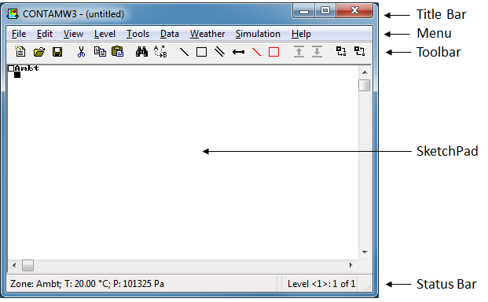
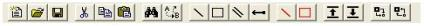

ContamW is the graphical user interface (GUI) of CONTAM. Use ContamW to create and view your airflow and contaminant dispersal analysis projects. It consists mainly of a drawing region referred to as the SketchPad, a set of drawing tools, a title bar, a set of menus, and a status bar. The following sections provide brief explanations of each of the features of the CONTAM GUI. See the Using ContamW section for details on how to use these features.

Figure - The CONTAM Graphical User Interface
The title bar is the typical rectangular region at the top of the main ContamW window. The CONTAM project filename will be displayed within this region.
The menu is typical of a Windows program with differences that provide functionality specific to the CONTAM application. It is through this menu that most ContamW operations can be performed including: saving and retrieving project files, selecting various modes of display, setting up and performing simulations, as well as accessing the on-line help system. Note that some of the menu items have shortcuts or hot-keys that enable quick access; for example, to save the current project file use the Ctrl+S key combination.
The toolbar, shown in the following figure, appears below the menu and provides convenient shortcuts to some of the menu items. Several of the toolbar buttons are similar to those found in other Windows applications. Other buttons provide a shortcut to functionality specific to ContamW.

The status bar, shown in the following figures, is the region displayed below the SketchPad at the bottom of the main window. This region is broken up into three separate panes that display various information depending on the current mode of the SketchPad.
ContamW 2.4 now provides you with a floating status bar which will display in the region of the caret whenever you select certain icons on the screen providing a more convenient means to review icon information. This is similar to Tool Tips that appear when you hover over a toolbar button with the Windows cursor. You can turn this feature on and off via the View → Floating Status Bar or Ctrl+T for Tool tips.
Left Pane
This pane always displays the type and number of building component icon, e.g., zone, path, air handling system, etc.
In the normal mode of operation, the leftmost pane displays summary information of the currently highlighted cell or icon.
In the simulation results mode, the leftmost pane displays the results for the currently highlighted icon. For a zone this includes the temperature and pressure relative to the ambient pressure at the elevation of the level on which the zone is located. For duct junctions and terminals it displays the temperature and static pressure relative to the zone in which the junction or terminal is located. For paths and duct segments it will display the airflow and pressure drop across the path or segment along with symbols to indicate the direction of flow (>, <, ^, v). For a simple air handling system icon the outdoor airflow, recirculation airflow and exhaust airflows for the implicit flow paths will be displayed.
Many units of display can be controlled by selecting the SI or IP system of units in the Project Configuration Properties accessible via the View →Options... menu command.
Center Pane
In the normal mode of operation, the center pane indicates the location of the currently highlighted icon or cell in SketchPad coordinates (numbered from the top-left corner). In the simulation results mode the center pane displays the current simulation time step for which the results are being displayed.
Right Pane
The rightmost pane displays the name and number of the current level and the total number of levels in the project.


Figure - Status Bar during Normal Mode and Results Viewing Mode respectively